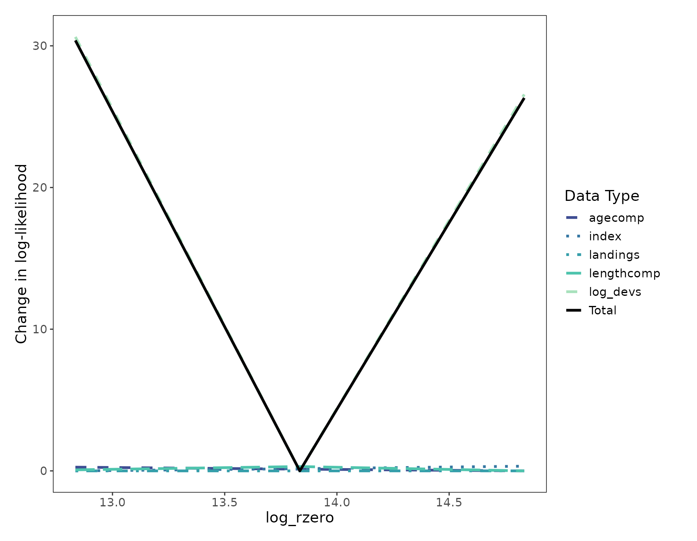
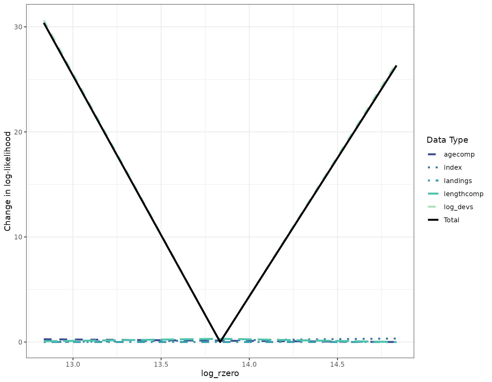
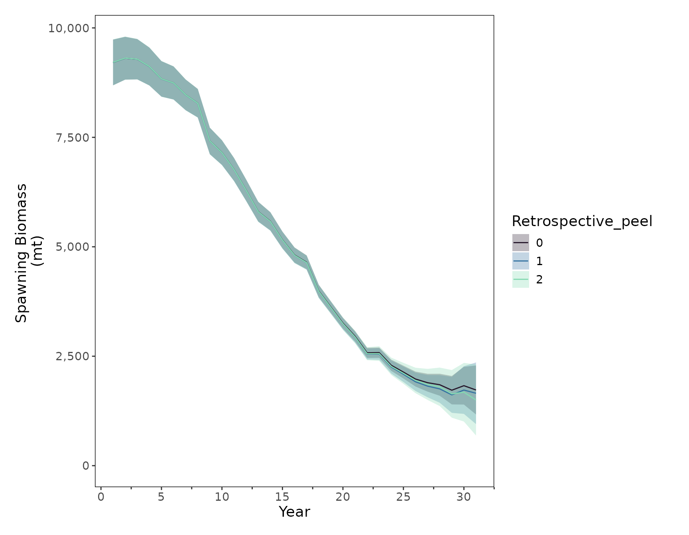

library(FIMS)
packageVersion("FIMS")
#> [1] '0.9.3.9000'
clear()Set up FIMS model
Following the minimal FIMS demo vignette, we will set up a FIMS model and run it. This model will contain the all years of data and will be our reference model (see section below for more information about reference models). We need to run it initially to get the MLE parameter estimates. For this example we are using the dataset included in the FIMS package and creating a set of default parameters.
# Load sample data
data("data_big")
# Prepare data for FIMS model
data_4_model <- FIMSFrame(data_big)
# Create parameters
parameters <- data_4_model |>
create_default_configurations() |>
create_default_parameters(data = data_4_model)
# Run the model with optimization
base_model <- parameters |>
initialize_fims(data = data_4_model) |>
fit_fims(optimize = TRUE)
#> ✔ Starting optimization ...
#> ℹ Restarting optimizer 3 times to improve gradient.
#> ℹ Maximum gradient went from 0.00165 to 0.00031 after 3 steps.
#> ✔ Finished optimization
#> ✔ Finished sdreport
#> ℹ FIMS model version: 0.9.3.9000
#> ℹ Total run time was 1.43587 minutes
#> ℹ Number of parameters: fixed_effects=49, random_effects=29, and total=78
#> ℹ Maximum gradient= 0.00031
#> ℹ Negative log likelihood (NLL):
#> • Marginal NLL= 3231.28735
#> • Total NLL= 3164.86339
#> ℹ Terminal SB= 1728.68508
# Clear memory post-run
clear()Likelihood profile
Once we have a model that is fit, we can run a likelihood profile to
see the impact of each data type on a given parameter. In this example,
we will test the impact on R0 but any value can be tested by
changing the parameter_name argument. Note: The
parameter name must match what it is called in the label
column of the parameters tibble. An optional input is
the module_name the parameter is associated with. However,
as long as there is only one parameter with that name,
module_name can be left NULL.
run_fims_likelihood() function takes a fitted FIMS model,
finds the MLE estimate for the parameter being profiled over (in this
case R0), and profiles over a vector of values based on the
min, max, and length user inputs.
In the example below, it will profile over 5 values that range from the
MLE value - 1 to the MLE value + 1. If you are
running many models at once, it can be computationally more efficient to
use multiple cores. To do this, change the n_cores argument
to as many as you want/can use. NOTE: If left empty, the default for
n_cores is one less than the number of cores on your
machine so this could unexpectedly use up a lot of your computing
power.
like_fit <- run_fims_likelihood(
model = base_model,
parameters = parameters,
parameter_name = "log_rzero",
data = data_big,
n_cores = 3,
min = -1,
max = 1,
length = 3
)Visualize results
Use plot_likelihood() to visualize the profile. The plot
shows the change in total likelihood over the R0 values
profiled in the solid black line and the change in likelihood for each
data type in the color lines below it. This plot indicates that the
R0 value estimated by the base model (13.9) is the value that
leads to the lowest likelihood and all of the data types support this
(i.e., the data do not conflict).
fig_likelihood_profile <- plot_likelihood(like_fit)
print(fig_likelihood_profile)
This function creates a ggplot object that can be
customized and added onto. The default theme is
stockplotr::theme_noaa, however to change the theme or
colors used, you can simply add them after the main plot function.
fig_likelihood_custom_theme <- plot_likelihood(like_fit) +
ggplot2::theme_bw()
print(fig_likelihood_custom_theme)
Clean up
Once you are finished running a FIMS model, it is always good practice to clear the C++ memory from one FIMS model run to the next.
clear()Retrospective analysis
A retrospective analysis is a common model diagnostic used to assess the stability of estimates of parameters and derived quantities, such as fishing mortality and spawning biomass, and if there is a consistent pattern in the estimates as years of data are removed. The process involves removing n years of data from the end of the time series and refitting the model. This is an iterative process where the user typically runs 5–10 models, with each run (often called “peels”) progressively removing another year of data. Estimates from these peels are then compared to the model run with the full dataset (reference model). The Mohn’s rho statistic can be used to compare the relative difference between the reference model and each peel. Mohn’s rho statistic is calculated as:
where is the number of retrospective peels, is the estimated value (e.g., spawning biomass, fishing mortality, etc.) from peel at its terminal year , and is the value from the reference model, , at that same year .
Some things to note about run_fims_retrospective() is
that you can provide data that is already a FIMSFrame
object or you can give it one that is not. In the example below, we are
using the FIMSFrame data object (data_4_model)
created above. Additionally, it expects a vector of positive values of
years_to_remove from the base model, starting from 0. If
you are running many peels, it may be more efficient to use multiple
cores, which can be specified with the n_cores
argument.
NOTE: If left empty, the default for
n_coresis one less than the number of cores on your machine so this could unexpectedly use up a lot of your computing power.
retro_fit <- run_fims_retrospective(
years_to_remove = 0:2,
data_4_model,
parameters,
n_cores = 1
)
#> ℹ ...Running sequentially on a single core
#> ℹ running model with 0 years of data removed
#> ✔ Starting optimization ...
#> ℹ Restarting optimizer 3 times to improve gradient.
#> ℹ Maximum gradient went from 0.00165 to 0.00031 after 3 steps.
#> ✔ Finished optimization
#> ✔ Finished sdreport
#> ℹ FIMS model version: 0.9.3.9000
#> ℹ Total run time was 1.44278 minutes
#> ℹ Number of parameters: fixed_effects=49, random_effects=29, and total=78
#> ℹ Maximum gradient= 0.00031
#> ℹ Negative log likelihood (NLL):
#> • Marginal NLL= 3231.28735
#> • Total NLL= 3164.86339
#> ℹ Terminal SB= 1728.68508
#> ℹ running model with 1 years of data removed
#>
#> ✔ Starting optimization ...
#> ℹ Restarting optimizer 3 times to improve gradient.
#> ℹ Maximum gradient went from 0.00638 to 0.00025 after 3 steps.
#> ✔ Finished optimization
#> ✔ Finished sdreport
#> ℹ FIMS model version: 0.9.3.9000
#> ℹ Total run time was 1.49698 minutes
#> ℹ Number of parameters: fixed_effects=49, random_effects=29, and total=78
#> ℹ Maximum gradient= 0.00025
#> ℹ Negative log likelihood (NLL):
#> • Marginal NLL= 3132.00827
#> • Total NLL= 3066.98892
#> ℹ Terminal SB= 1654.148
#> ℹ running model with 2 years of data removed
#>
#> ✔ Starting optimization ...
#> ℹ Restarting optimizer 3 times to improve gradient.
#> ℹ Maximum gradient went from 0.00164 to 0.00173 after 3 steps.
#> ✔ Finished optimization
#> ✔ Finished sdreport
#> ℹ FIMS model version: 0.9.3.9000
#> ℹ Total run time was 1.50064 minutes
#> ℹ Number of parameters: fixed_effects=49, random_effects=29, and total=78
#> ℹ Maximum gradient= 0.00173
#> ℹ Negative log likelihood (NLL):
#> • Marginal NLL= 3036.85438
#> • Total NLL= 2973.27387
#> ℹ Terminal SB= 1500.13192Mohn’s Rho
Once you have run a retrospective, you can then calculate the Mohn’s rho statistic for spawning biomass by:
rho_sb <- calculate_mohns_rho(retro_fit, quantity = "spawning_biomass")Visualize the results
To visualize the results of the retrospective analysis, we can use
plot_retrospective() to display the quantity of interest.
Below, we want to assess the impact on spawning biomass. The function
returns a ggplot object, which you can customize by adding
add layers as you normally would to a ggplot. For example,
below, we specify the x and y axes labels and the legend title.
fig_retrospective_ssb <- stockplotr::plot_spawning_biomass(
retro_fit$estimates |>
dplyr::rename(
year = year_i,
estimate = estimated
) |>
dplyr::mutate(
uncertainty_label = "se"
),
group = "retrospective_peel"
)
print(fig_retrospective_ssb)
We can compare the spawning biomass estimates from the reference model and each peel for the last six years.
retro_fit[["estimates"]] |>
dplyr::filter(label == "spawning_biomass") |>
dplyr::select(label, year_i, estimated, retrospective_peel) |>
tidyr::pivot_wider(
names_from = retrospective_peel,
values_from = estimated
) |>
dplyr::rename(
"Year" = year_i,
"Reference model" = `0`,
"Peel 1" = `1`,
"Peel 2" = `2`
) |>
tail()
#> # A tibble: 6 × 5
#> label Year `Reference model` `Peel 1` `Peel 2`
#> <chr> <int> <dbl> <dbl> <dbl>
#> 1 spawning_biomass 26 1979. 1916. 1947.
#> 2 spawning_biomass 27 1895. 1817. 1856.
#> 3 spawning_biomass 28 1849. 1754. 1801.
#> 4 spawning_biomass 29 1724. 1618. 1640.
#> 5 spawning_biomass 30 1827. 1727. 1678.
#> 6 spawning_biomass 31 1729. 1654. 1500.Clean up
Once you are finished running a FIMS model, it is always good practice to clear the C++ memory from one FIMS model run to the next.
clear()